Chapter 4_Digital Transmission
4.1 Digital-to-Digital Conversion
在第 3 章中，我們討論了數據和信號。
我們說過數據可以是數字的也可以是類比的。
我們還說過，代表數據的信號也可以是數字的或類比的。
在本節中，我們將了解如何使用數字信號來表示數字數據。
轉換涉及三種技術：線路編碼(line coding)、塊編碼(block coding)和加擾(scrambling)。
始終需要線路編碼；可能需要也可能不需要塊編碼和加擾。
Line Coding
線路編碼是將數字數據轉換為數字信號的過程。
我們假設數據，以文本、數字、圖形圖像、音頻或視頻的形式，作為位序列存儲在計算機內存中。
線路編碼將位序列轉換為數字信號。
在發送端，數字數據被編碼成數字信號；在接收器，數字數據通過解碼數字信號重新創建。
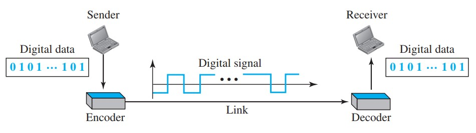
-
Characteristics:
不同線路編碼方案的共同特徵。
-
Signal Element Versus Data Element:
數據元素(data element)是我們需要發送的；信號元素(signal element)是我們可以發送的。
數據元素是被攜帶的；信號元素是載體。
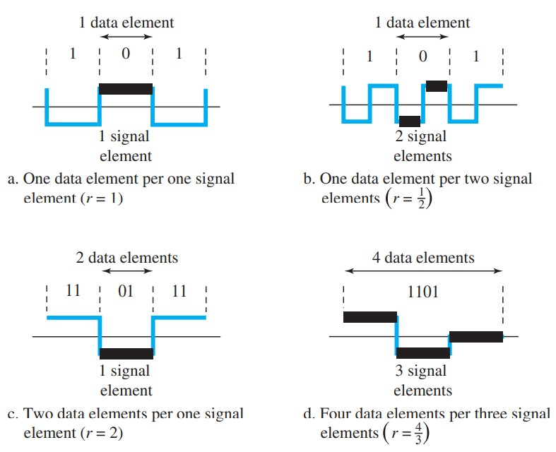
//我們定義了一個比率 r，它是每個信號元素攜帶的數據元素的數量。
假設每個數據元素是一個需要從一個地方帶到另一個地方的人。
我們可以將信號元件視為可以載人的交通工具。
當 r = 1 時，表示每個人都在駕駛車輛。
當 r > 1 時，這意味著不止一個人正在乘坐一輛車（例如拼車）。
我們也可以有一個人駕駛一輛汽車和一輛拖車的情況(r = 1/2)。
[ r = date element / signal element ]
-
Data Rate Versus Signal Rate:
數據速率定義了1秒內發送的數據元素(bits)的數量。單位是bits per seconds(bps)。
數據速率有時稱為bit rate。
信號速率是1內發送的信號元素個數。單位是baud(波特)。
信號速率有時稱為脈衝速率(pulse rate)、調製速率(modulation rate)或波特率(baud rate)。
數據通信的一個目標是在降低信號速率的同時提高數據速率。
提高數據速率會提高傳輸速度； 降低信號速率會降低帶寬要求。
在我們的車輛-人類比中，我們需要用更少的車輛載更多的人來防止交通擁堵。我們的交通系統帶寬有限。
我們需要考慮數據速率（N）和信號速率（S）之間的關係。
[ S = N/r ]
[ Save = c × N × (1/r) baud ]
-
Bandwidth:
我們談論數字信號的帶寬時，我們需要記住我們談論的是有效帶寬。
雖然數字信號的實際帶寬是無限的，有效帶寬是有限的。
bit rate（信號率）和帶寬之間存在關係。
我們需要更多關於帶寬的信息，而不僅僅是它的值；我們需要一個帶寬圖。
我們可以說帶寬（頻率範圍）與信號速率（波特率）成正比。
[ Bmin = c × N × (1 / r) ]
[ Nmax = (1 / c) × B × r ]
[ Nmax = (1/c) × B × r = 2 × B × log2 L ]
-
Baseline Wandering:
在解碼數字信號時，接收機計算接收信號功率的移動平均值。
這個平均值稱為基線。
根據該基線評估輸入信號功率以確定數據元素的值。
一長串的 0 或 1 會導致基線漂移（baseline wandering）並使接收器難以正確解碼。
一個好的線路編碼方案需要防止基線漂移。
-
DC Components:
當數字信號中的電壓電平在一段時間內保持恆定時，頻譜會產生非常低的頻率（傅里葉分析的結果）。
我們可以說 DC 分量意味著 0/1 奇偶校驗，可能會導致基線疑惑。
長距離鏈路可以使用一個或多個變壓器來電氣隔離線路的不同部分。
對於這些系統，我們需要一個沒有直流分量的方案。
-
Self-synchronization:
為了正確解釋從發送方接收到的信號，接收方的bit間隔必須與發送方的bit間隔完全對應。
如果接收器時鐘更快或更慢，則bit隔不匹配，接收器可能會誤解信號。
自同步數字信號包括正在傳輸的數據中的定時信息。
如果信號中存在向接收器提示脈沖開始、中間或結束的轉變，則可以實現這一點。
如果接收器的時鐘不同步，這些點可以重置時鐘。
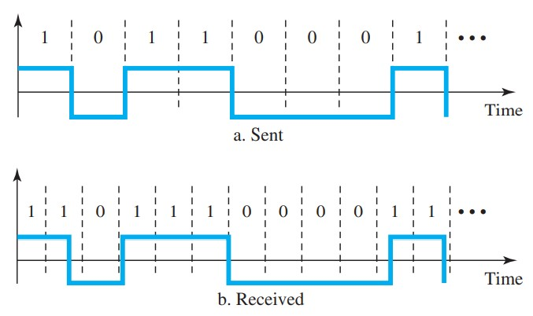
-
Built-in Error Detection:
希望在生成的代碼中具有內置的錯誤檢測能力，以檢測在傳輸過程中發生的部分或全部錯誤。
我們將討論的一些編碼方案在某種程度上具有這種能力。
-
Immunity to Noise and Interference:
另一個理想的代碼特性是不受噪聲和其他干擾的代碼。
我們將討論的一些編碼方案具有這種能力。
-
Complexity:
實施複雜的方案比實施簡單的方案成本更高。
Line Coding Schemes
我們可以將線路編碼方案大致分為五個大類。
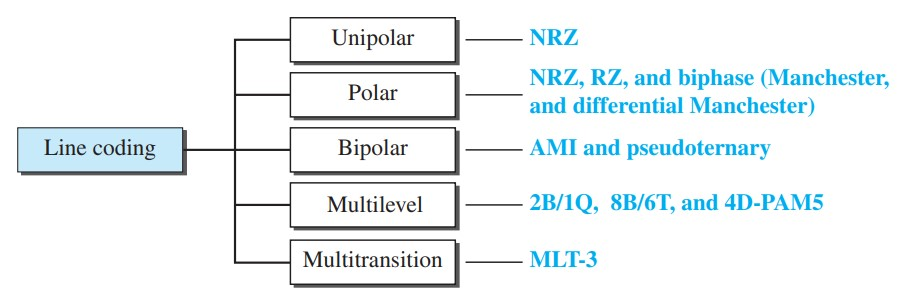
-
Unipolar Scheme:
在單極方案中，所有信號電平都位於時間軸的一側，高於或低於。
-
NRZ (Non-Return-to-Zero):
傳統上，單極方案設計為不歸零 (NRZ) 方案，其中正電壓定義位 1，零電壓定義位 0。
它被稱為NRZ，因為信號不會在位中間返回零。
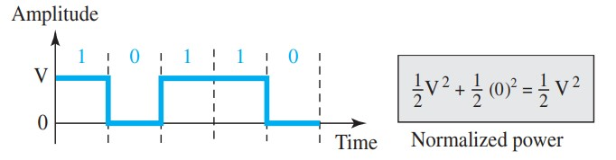
與它的polar counterpart(極地對應物)相比，這種方案的成本非常高。
正如我們很快將看到的，歸一化功率（每單位線路電阻發送 1 位所需的功率）是極性 NRZ 的兩倍。
由於這個原因，這種方案通常不用於今天的數據通信。
-
Polar Schemes:
在極性方案中，電壓位於時間軸的兩側。
例如，0 的電壓電平可以為正，1 的電壓電平可以為負。
-
Non-Return-to-Zero (NRZ):
在極性 NRZ 編碼中，我們使用兩級電壓幅度。
我們可以有兩個版本的極地 NRZ：NRZ-L 和 NRZ-I。
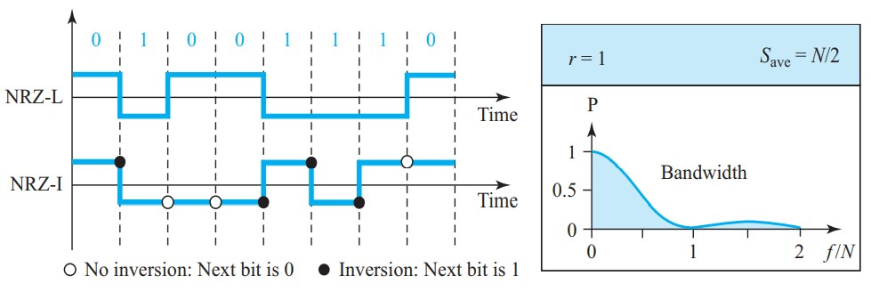
該圖顯示了 r 的值、平均波特率和帶寬。
在第一個變體 NRZ-L (NRZ-Level) 中，電壓的電平決定了位的值。
在第二種變體 NRZ-I (NRZ-Invert) 中，電壓電平的變化或沒有變化決定了位的值。
如果沒有變化，則該位為 0； 如果有變化，該位為 1。
在 NRZ-L 中，電壓電平決定了位的值。
在 NRZ-I 中，反轉或不反轉決定了位的值。
讓我們根據我們之前定義的標準來比較這兩種方案。
儘管基線漂移對於這兩種變體都是一個問題，但在NRZ-L 中它的嚴重程度是其兩倍。
如果 NRZ-L 中有長序列的 0 或 1，則平均信號功率會出現偏差。
接收器可能難以辨別位值。
在 NRZ-I 中，這個問題只發生在長的 0 序列中。
如果我們能以某種方式消除長的 0 序列，我們可以避免基線漂移。
我們將很快看到如何做到這一點。
同步問題（發送方和接收方時鐘不同步）也存在於兩種方案中。
同樣，這個問題在 NRZ-L 中比在 NRZ-I 中更嚴重。
雖然長的 0 序列在這兩種方案中都可能導致問題，但長的 1 序列僅影響 NRZ-L。
NRZ-L 的另一個問題發生在系統極性突然變化時。
例如，如果雙絞線電纜是介質，電線極性的變化會導致全 0 被解釋為 1，而全 1 被解釋為 0。
NRZ-I 沒有這個問題。
NRZ-L 和 NRZ-I 均具有 N/2 Bd 的平均信號速率。
軸表示功率密度(每 1 Hz 帶寬的功率);橫軸表示頻率
對於這種類型的編碼，帶寬揭示了一個非常嚴重的問題。
功率密度值在接近零的頻率附近非常高。
這意味著存在攜帶高能量水平的直流分量。
事實上，大部分能量都集中在 0 到 N/2 之間的頻率上。
這意味著雖然信號速率的平均值為 N/2，但能量在兩半之間並沒有均勻分佈。
NRZ-L 和 NRZ-I 都存在直流分量問題。
-
Return-to-Zero (RZ):
NRZ 編碼的主要問題發生在發送器和接收器時鐘不同步時。
接收器不知道一個比特何時結束以及下一個比特何時開始。
一種解決方案是歸零 (RZ) 方案，它使用三個值：正、負和零。
在 RZ 中，信號不是在bit之間而是在bit期間發生變化。
我們看到信號在每個bit的中間變為 0。
它一直保持在那裡，直到下一位的開始。
RZ編碼的主要缺點是它需要兩次信號變化來編碼一個bit，因此佔用了更大的帶寬。
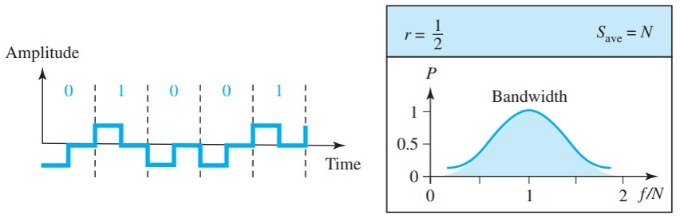
我們提到的同樣的問題，極性突然變化導致全 0 被解釋為 1，全 1 被解釋為 0，這裡仍然存在，但不存在直流分量問題。
另一個問題是複雜性：RZ 使用三級電壓，創建和識別更複雜。
由於所有這些缺陷，今天沒有使用該方案。
相反，它已被性能更好的曼徹斯特方案和差分曼徹斯特方案（接下來討論）所取代。
-
Biphase: Manchester and Differential Manchester:
RZ（bit中間的轉換）的思想和NRZ-L的思想被結合到曼徹斯特方案中。
在曼徹斯特編碼中，比特的持續時間分為兩半。
電壓在前半部分保持在一個水平，在後半部分移動到另一個水平。
bit中間的轉換提供同步。
另一方面，微分曼徹斯特結合了 RZ 和 NRZ-I 的思想。
在位的中間總是有一個轉換，但位值是在位的開頭確定的。
如果下一位為 0，則有過渡；如果下一位是 1，則沒有。
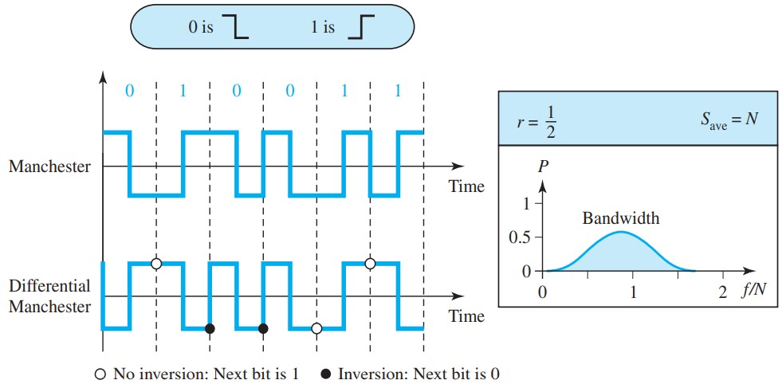
曼徹斯特方案克服了與 NRZ-L 相關的幾個問題，而差分曼徹斯特方案克服了與 NRZ-I 相關的幾個問題。
首先，沒有基線漂移。
沒有直流分量，因為每個位都有正負電壓貢獻。
唯一的缺點是信號速率。
在曼徹斯特和差分曼徹斯特編碼中，位中間的轉換用於同步。
曼徹斯特和差分曼徹斯特的信號速率是 NRZ 的兩倍。
原因是位的中間總是有一個轉換，每個位的末尾可能有一個轉換。
-
Bipolar Schemes:
在雙極編碼（有時稱為多級二進制）中，有三個電壓電平：正、負和零。
-
AMI 一個數據元素的電壓電平為零，而另一個數據元素的電壓電平在正負之間交替變化。
-
AMI 的一種變體編碼被稱為偽三元，其中 1 位被編碼為零電壓，0 位被編碼為交替的正負電壓。
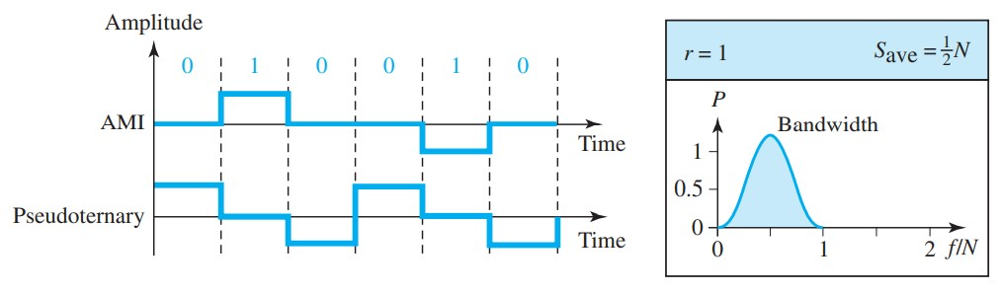
雙極方案是作為 NRZ 的替代方案而開發的。
雙極方案具有與 NRZ 相同的信號速率，但沒有直流分量。
NRZ 方案的大部分能量集中在零頻率附近，這使得它不適合在該頻率附近性能較差的信道上傳輸。
雙極編碼中的能量集中在頻率 N/2 附近。雙極方案的典型能量集中度。
有人可能會問，為什麼我們在雙極編碼中沒有直流分量。
我們可以通過傅里葉變換來回答這個問題，但我們也可以直觀地思考它。
如果我們有很長的 1 序列，則電壓電平在正負之間交替；它不是恆定的。
因此，沒有直流分量。對於一長串的 0，電壓保持恆定，但其幅值為零，這與沒有直流分量相同。
換句話說，產生恆定零電壓的序列沒有直流分量。
AMI 常用於長距離通信，但當數據中存在長序列的 0 時，它會出現同步問題。
在本章後面，我們將看到加擾技術如何解決這個問題。
-
Multilevel Schemes:
增加數據速率或減少所需帶寬的願望導致了許多方案的創建。
目標是通過將 m 個數據元素的模式編碼為 n 個信號元素的模式來增加每波特的位數。
我們只有兩種類型的數據元素(0 和 1)，這意味著一組 m 個數據元素可以產生 2m 個數據模式的組合。
通過允許不同的信號電平，我們可以擁有不同類型的信號元素。
如果我們有 L 個不同的電平，那麼我們可以產生 Ln 個信號模式的組合。
如果 2m = Ln，則每個數據碼型被編碼為一個信號碼型。
如果 2m < Ln，則數據模式僅佔用信號模式的子集。
可以仔細設計子集以防止基線漂移、提供同步以及檢測數據傳輸期間發生的錯誤。
如果 2m > Ln，則無法進行數據編碼，因為某些數據模式無法編碼。
代碼設計者將這些類型的編碼分類為 mBnL，其中 m 是二進制模式的長度，B 表示二進制數據，n 是信號模式的長度，L 是信令中的級別數。
字母通常用於代替 L：B（二進制）表示 L = 2，T（三進制）表示 L = 3，Q（四進制）表示 L = 4。
請注意，前兩個字母定義數據模式，並且後兩個定義信號模式。
在 mBnL 方案中，m 個數據元素的模式被編碼為 n 個信號元素的模式，其中 2m ≤ Ln。
-
2B1Q:
我們討論的第一個 mBnL 方案，兩個二進制，一個四進制 (2B1Q)，使用大小為 2 的數據模式並將 2 位模式編碼為屬於四電平信號的一個信號元素。
在這種類型的編碼中，m = 2、n = 1 和 L = 4（四進制）。
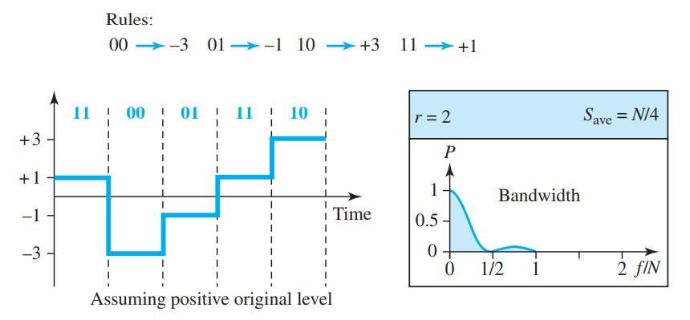
2B1Q 的平均信號率為 S = N/4。 這意味著使用 2B1Q，我們可以比使用 NRZ-L 快 2 倍地發送數據。
然而，2B1Q 使用四個不同的信號電平，這意味著接收器必須識別四個不同的閾值。
減少的帶寬是有代價的。
該方案中沒有冗餘信號模式，因為 22 = 41。
2B1Q 方案用於 DSL（數字用戶線）技術，通過用戶電話線提供到 Internet 的高速連接。
-
8B6T:
一個非常有趣的方案是八二進制，六三進制（8B6T）。
該代碼與 100BASE-4T 電纜一起使用。
其想法是將 8 位模式編碼為六個信號元素的模式，其中信號具有三個級別（三進制）。
在這種類型的方案中，我們可以有 28 = 256 種不同的數據模式和 36 = 729 種不同的信號模式。
有 729 - 256 = 473 個冗餘信號元素提供同步和錯誤檢測。
部分冗餘也用於提供直流平衡。
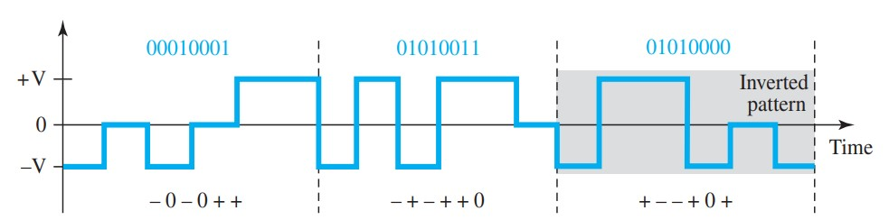
每個信號模式的權重為 0 或 +1 DC 值。
這意味著沒有權重為 -1 的模式。
為了使整個流 DC 平衡，發送方會跟踪權重。
如果依次遇到兩組權重1，則第一組按原樣發送，而下一組則完全反轉以給出-1的權重。
第一個 8 位模式 00010001 被編碼為信號模式 - 0 - 0 + +，權重為 0。
第二個 8 位模式 01010011 被編碼為 - + - + + 0，權重 +1。
第三個 8 位模式 01010000 應編碼為 + - - + 0 +，權重 +1。
為了創建 DC 平衡，發送器將實際信號反轉。
接收器可以很容易地識別出這是一個反轉模式，因為權重為 -1。
該模式在解碼之前被反轉。
該方案的平均信號速率理論上為 Save = 1/2 × N × 6/8 ； 實際上，最小帶寬非常接近 6N/8。
-
4D-PAM5:
我們在此類別中討論的最後一個信令方案稱為四維五電平脈衝幅度調製 (4D-PAM5)。
4D 意味著數據同時通過四根線發送。
它使用五個電壓電平，例如 -2、-1、0、1 和 2。
但是，一個電平，即 0 級，僅用於前向錯誤檢測。
如果我們假設代碼只是一維的，那麼四個級別會創建類似於 8B4Q 的東西。
換句話說，一個 8 位字被翻譯成四個不同級別的信號元素。
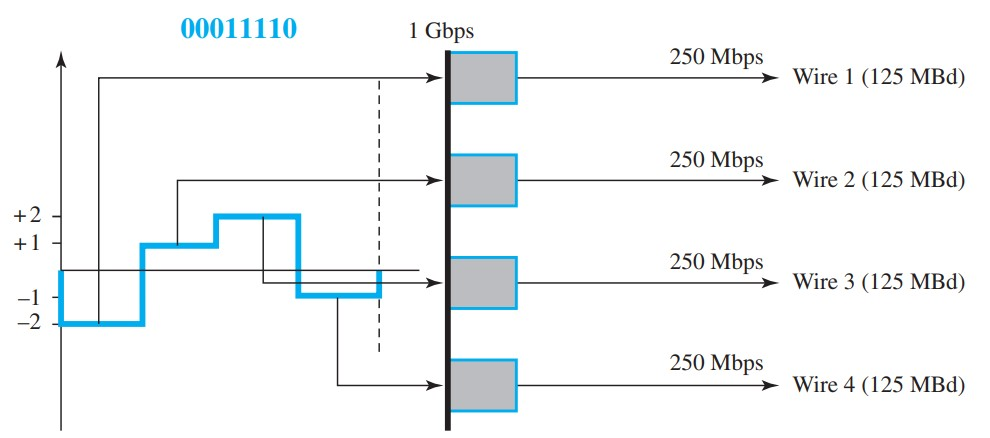
這個假想的一維版本的最差信號速率是 N × 4/8 或 N/2。
該技術旨在通過四個通道（四線）發送數據。這意味著信號速率可以降低到 N/8，這是一項重大成就。
所有 8 位可以同時饋入一條線，並使用一個信號元件發送。
這裡的重點是組成一個信號組的四個信號元素在四維設置中同時發送。
千兆位 LAN 使用這種技術通過 4 根可處理 125 Mbaud 的銅纜發送 1-Gbps 數據。
該方案在信號模式中有很多冗餘，因為 28 個數據模式與 44 = 256 個信號模式匹配。
額外的信號模式可以用於其他目的，例如錯誤檢測。
4.2 TCP/IP Protocol Suite
2.3 OSI Model